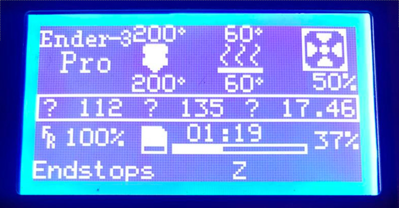
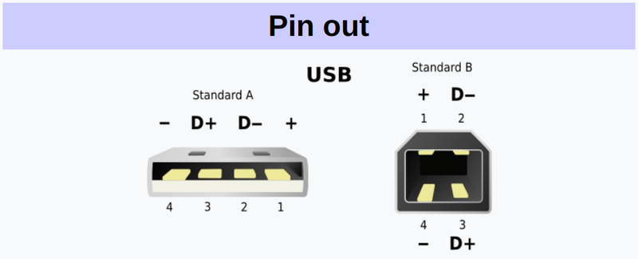

Небольшой лайфхак для отключения питания Ender3 от Octoprint

С того момента, как я подключил свой 3d принтер Creality Ender3 к Orange Pi PC и настроил octoprint для удалённой печати, меня очень раздражала одна особенность реализации платы управления эндера. В случае, когда питание принтера было выключено, плата продолжала питаться по линии +5в через USB разъём. Дисплей светился, на нём отображалась информация с датчиков температуры (хоть и не настолько контрастно, как при включенном питании), можно было перемещаться по меню, а вентилятор охлаждения хотенда постоянно вращался (не в полную силу конечно, но это тоже создавало лишний звуковой фон). Более того, octoprint не терял соединения с принтером, и если при этом включить нагрев стола или хотенда, изображение на дисплее становилось менее различимым, но подсветка продолжала работать. Другими словами, есть явная недоработка со стороны Creality и вчера я это исправил, потратив на это примерно 0 рублей, сотые доли копейки и три минуты.
Казалось бы, что плохого в том, что плата запитана через *Pi постоянно? Дело в том, что блок питания на Ender выдаёт 24 вольта. И вентиляторы охлаждения соответственно так же потребляют 24 вольта, в том числе и вентилятор охлаждения хотенда. Потребляемая им мощность 12в * 1А = 12 ватт. Блоку питания, к которому подключен *Pi приходится очень несладко и он работает в нештатном режиме и как минимум с двойной нагрузкой. Я уже не говорю о том, что при случайной попытке нагреть стол или хотенд, потребляемая мощность становится совершенно другой и то, что блок питания, подключенный к *Pi не умер в мучениях, пытаясь это вытянуть, вообще у меня вызывает удивление. Поэтому если в начале дня я ставил на печать какую-то деталь, скажем, на 4-5 часов, то оставшиеся 5-6 часов, пока я находился на работе, принтер продолжал работать вхолостую.
Однажды, когда я снимал деталь со стола, у меня в руке был зажат пинцет, которым я по неосторожности попал в вентилятор охлаждения хотенда, в результате чего тот мгновенно вышел из строя. Вентилятор пришлось заменить. Раньше я и не подозревал, что найти вентилятор подходящего размера на 24 вольта может составить проблему в городе с населением в миллион человек. Я нашёл всего один подходящий вентилятор и всего в одном месте, поэтому мой вам совет - озаботьтесь приобретением небольшого стабилизатора напряжения с 24 на 12 вольт, с тем, чтобы достать вентилятор на 12 вольт никаких проблем нет. После замены штатного охлаждения при отключении питания принтера с подключением Orange Pi новый вентилятор уже не вращался, но издавал очень неприятный, хоть и не очень громкий писк. Другими словами, выключить принтер полностью, оставив работать *Pi было возможно, но очень не хотелось.
При поиске решения этой проблемы, мне приходили в голову разные варианты - и запараллелить управляемый вход реле, включающего принтер со входом соседнего реле и с его помощью отключать вентилятор. И использовать симистор с делителем напряжения на двух резисторах и перерезать дорожку питания возле USB разъёма на плате, но оказалось, что решение проблемы куда проще, быстрее и не требует вносить практически никаких изменений в конструкцию. Идея проста как апельсин. Зачем вносить конструктивные изменения в Orange Pi или тем более, в плату принтера, если можно изменить кабель? Наша задача - прервать поступление питания на плату принтера через USB кабель. Для передачи информации необходимо согласование уровней, это обеспечивается общей линией земли, а плата принтера пускай получает питание как положено - от своего блока питания. Первой моей идеей было снять изоляцию и просто разрезать красный провод питания кабеля, но потом я придумал ещё один вариант, который оказался ещё проще и даже не предполагает физического насилия над самим кабелем. Если посмотреть на распиновку разъёма USB Type A, развернув его к себе, то контакт питания будет справа, на схеме он обозначен цифрой 1.

Всё, что нам необходимо - изолировать его. Чем можно подобраться к контакту так, чтобы его изолировать, не повредить разъём и чтобы при этом разъём потом можно было вставить в ответный разъём? Нужно что-то тонкое и не проводящее ток. Изолента не подходит - слишком толстая. Вывод - берём скотч! Всё, что нужно сделать - аккуратно вырезать узкую полоску скотча примерно в полтора миллиметра шириной и сантиметра в два длиной. Аккуратно помещаем полоску в разъём так, чтобы клейкой стороной она легла на контакт питания. Прижимаем к контакту зубочисткой, а оставшуюся часть, выглядывающую из разъёма, загибаем наружу и приклеиваем к нижней его части. Получается замечательно - изолирующая полоска никуда не денется в процессе подключения разъёма, ничему не будет мешать, а в случае необходимости её очень легко можно убрать. Теперь при подаче питания на принтер всё работает like a charm, при отключении - принтер обесточивается полностью. Никакого свиста от кулера, никакого светящегося в ночи дисплея - можно спать спокойно.
Теги: 3d-printing